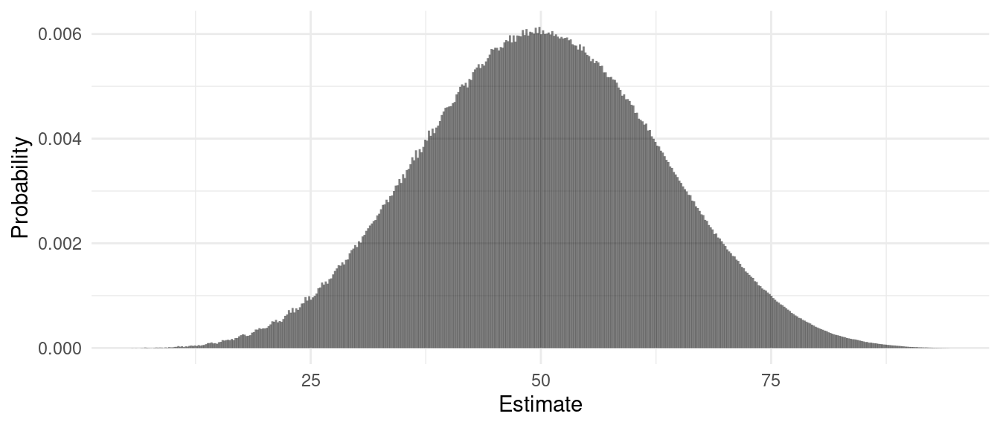
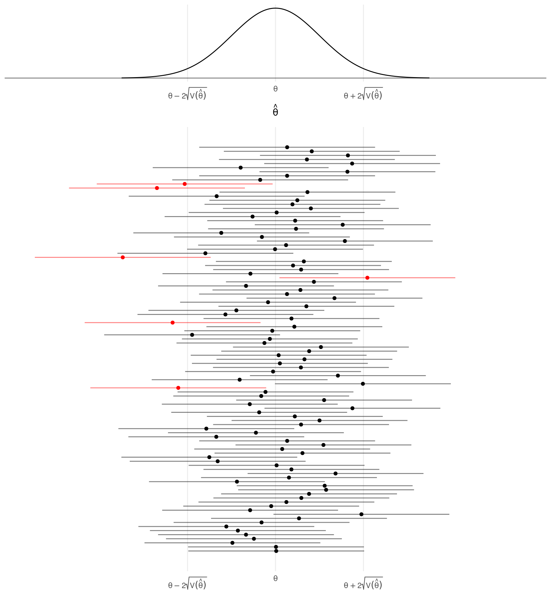

You can also download a PDF copy of this lecture.
A variation on simple random sampling is a design where we sample with replacement where every possible sample of \(n\) elements has the same probability of being selected, but where the elements need not be distinct.
Example: Suppose we have \(N\) = 4 and \(n\) = 2 as in previous example. The sampling design for a simple random sampling design when sampling without replacement is shown below.| Sample | Probability |
|---|---|
| \(\mathcal{E}_1\), \(\mathcal{E}_2\) | 1/6 |
| \(\mathcal{E}_1\), \(\mathcal{E}_3\) | 1/6 |
| \(\mathcal{E}_1\), \(\mathcal{E}_4\) | 1/6 |
| \(\mathcal{E}_2\), \(\mathcal{E}_3\) | 1/6 |
| \(\mathcal{E}_2\), \(\mathcal{E}_4\) | 1/6 |
| \(\mathcal{E}_3\), \(\mathcal{E}_4\) | 1/6 |
| Sample | Probability |
|---|---|
| \(\mathcal{E}_1\), \(\mathcal{E}_1\) | 1/16 |
| \(\mathcal{E}_1\), \(\mathcal{E}_2\) | 1/16 |
| \(\mathcal{E}_1\), \(\mathcal{E}_3\) | 1/16 |
| \(\mathcal{E}_1\), \(\mathcal{E}_4\) | 1/16 |
| \(\mathcal{E}_2\), \(\mathcal{E}_1\) | 1/16 |
| \(\mathcal{E}_2\), \(\mathcal{E}_2\) | 1/16 |
| \(\mathcal{E}_2\), \(\mathcal{E}_3\) | 1/16 |
| \(\mathcal{E}_2\), \(\mathcal{E}_4\) | 1/16 |
| \(\mathcal{E}_3\), \(\mathcal{E}_1\) | 1/16 |
| \(\mathcal{E}_3\), \(\mathcal{E}_2\) | 1/16 |
| \(\mathcal{E}_3\), \(\mathcal{E}_3\) | 1/16 |
| \(\mathcal{E}_3\), \(\mathcal{E}_4\) | 1/16 |
| \(\mathcal{E}_4\), \(\mathcal{E}_1\) | 1/16 |
| \(\mathcal{E}_4\), \(\mathcal{E}_2\) | 1/16 |
| \(\mathcal{E}_4\), \(\mathcal{E}_3\) | 1/16 |
| \(\mathcal{E}_4\), \(\mathcal{E}_4\) | 1/16 |
Sampling with replacement changes the properties of the design as well as the sampling distributions of \(\bar{y}\) and \(\hat\tau\).
The number of possible samples is \(N^n\), which is larger than the number of possible samples when sampling without replacement unless \(n\) = 1. For example, with a population of \(N\) = 4 elements and a sample size of \(n\) = 2, the number of possible samples is 16 when sampling with replacement as opposed to 6 when sampling without replacement.
The inclusion probabilities when sampling with replacement are \(\pi_i = 1 - (1 - 1/N)^n\) as opposed to \(\pi_i = n/N\) when sampling without replacement. We will discuss why and how this might be used later in the course.
The variance of \(\bar{y}\) and \(\hat\tau\) do not include the finite population correction term so the formulas become \[ \text{V}(\bar{y}) = \frac{\sigma^2}{n} \ \ \ \text{and} \ \ \ \text{V}(\hat\tau) = N^2\frac{\sigma^2}{n}. \] So how do the variances of \(\bar{y}\) and \(\hat\tau\) when sampling with replacement compare to that when sampling without replacement?
What can we say about the shape of the sampling distribution of \(\bar{y}\) or \(\hat\tau\)? The central limit theorem for simple random sampling states that as \(n\), \(N\), and \(N-n\) increase, and assuming some other rather technical but usually applicable conditions, the sampling distribution of \(\bar{y}\) “approaches” a normal distribution. This implies the same behavior for the sampling distribution of \(\hat\tau\).
Example: Consider simple random sampling design with a population of \(N\) = 50 elements and a sample size of \(n\) = 5. The values of the target variable in the population were selected randomly from the integers from 0 to 100, but the values were “shifted” so that \(\mu = 50\). The figure below shows the exact discrete sampling distribution of \(\bar{y}\). 
Let \(\theta\) denote a parameter (e.g., \(\mu\) or \(\tau\)) and let \(\hat\theta\) denote an estimator (e.g., \(\bar{y}\) or \(\hat\tau\)). Assume that the sampling distribution of \(\hat\theta\) is (approximately) normal in shape (by the central limit theorem) with a mean of \(\theta\) (i.e., the estimator is unbiased) and a variance of \(\mbox{V}(\hat\theta)\). What do we know about this sampling distribution?
Example: Considered the earlier example with a population of \(N\) = 50 elements and a simple random sampling design of \(n\) = 5 elements. The mean and variance for the population are \(\mu\) = 50 and \(\sigma^2\) \(\approx\) 900, respectively. What can we conclude about the sampling distribution of \(\bar{y}\)?
The term \(\sqrt{\text{V}(\hat\theta)}\) is the standard error of \(\hat\theta\). It is simply the standard deviation of \(\hat\theta\). Under simple random sampling the standard errors of \(\bar{y}\) and \(\hat\tau\) are simply \[ \text{SE}(\bar{y}) = \sqrt{\text{V}(\bar{y})} = \sqrt{\left(1 - \frac{n}{N}\right)\frac{\sigma^2}{n}} \ \ \ \text{and} \ \ \ \text{SE}(\hat\tau) = \sqrt{\text{V}(\hat\tau)} = \sqrt{N^2\left(1 - \frac{n}{N}\right)\frac{\sigma^2}{n}}, \] respectively. Note that as shown in the previous section many quantities of interest concerning the “accuracy” of an estimator are proportional to the standard error.
The term \(2\sqrt{\text{V}(\hat\theta)}\) is called the bound on the error of estimation (also sometimes the margin of error). It can be viewed as an kind of upper bound on the distance between \(\hat\theta\) and \(\theta\) in the sense that there is about a 95% chance that a survey will not exceed this error. That is \[ P\left(\theta - 2\sqrt{\text{V}(\hat\theta)} < \hat\theta < \theta + 2\sqrt{\text{V}(\hat\theta)}\right) \approx 0.95. \] Under simple random sampling the bounds on the error of estimation for \(\bar{y}\) and \(\hat\tau\) are \[ 2\sqrt{\left(1 - \frac{n}{N}\right)\frac{\sigma^2}{n}} \ \ \ \text{and} \ \ \ 2\sqrt{N^2\left(1 - \frac{n}{N}\right)\frac{\sigma^2}{n}}, \] respectively. It is important to note that this result requires that the sampling distribution is normal. In practice it only is true approximately.3
The bound on the error of estimation can be used to construct a confidence interval which is an “interval estimate” of a parameter (as opposed to a “point estimate”) that has a known probability of being correct. This is because \[ P\left(\theta - 2\sqrt{\text{V}(\hat\theta)} < \hat\theta < \theta + 2\sqrt{\text{V}(\hat\theta)}\right) \approx 0.95 \] implies that \[ P\left(\hat\theta - 2\sqrt{\text{V}(\hat\theta)} < \theta < \hat\theta + 2\sqrt{\text{V}(\hat\theta)}\right) \approx 0.95. \] The confidence interval can be written as \[ \hat\theta \pm 2\sqrt{\text{V}(\hat\theta)} \Leftrightarrow \left(\hat\theta - 2\sqrt{\text{V}(\hat\theta)}, \hat\theta + 2\sqrt{\text{V}(\hat\theta)}\right). \] The probability of 95% is the confidence level of the confidence interval. It represents the expected percent of confidence intervals that would correctly estimate the parameter, and the probability that a survey will produce an estimate with an error less than the bound on the error of estimation. 
Example: Consider the previous example. If we obtain a sample and compute sample mean of \(\bar{y}\) = 71.64, what is the confidence interval for estimating \(\mu\)? What is the confidence interval for estimating \(\tau\)?
We do not typically know \(\sigma^2\) (i.e., the variance of the target variable for the population), although we might use an educated guess if necessary (more on that later). But we can estimate it after a survey has been conducted, and use that to estimate the variance of an estimator. An unbiased estimator is the sample variance \[ s^2 = \frac{1}{n-1}\sum_{i \in \mathcal{S}} (y_i - \bar{y})^2. \] Then the estimators of the variance of \(\bar{y}\) and \(\hat\tau\) are \[ \widehat{\text{V}(\bar{y})} = \left(1 - \frac{n}{N}\right)\frac{s^2}{n} \ \ \ \text{and} \ \ \ \widehat{\text{V}(\hat\tau)} = N^2\left(1 - \frac{n}{N}\right)\frac{s^2}{n}. \] The problem of estimating the variance of an estimator is called variance estimation in survey sampling.
Example: The sample from the previous example yields a sample variance of \(s^2\) = 616.7. The sample is 78.84, 29.84, 90.84, 88.84, and 69.84. How would we use this to compute (a) the bound on the error of estimation for estimating \(\mu\) with \(\bar{y}\) and (b) a confidence interval for estimating \(\mu\)?
The mean is \(\sqrt{2\text{V}(\hat\theta)/\pi}\) and the median is \(\sqrt{2\text{V}(\hat\theta)\text{erf}^{-1}(0.5)}\) where \(\text{erf}^{-1}\) is the inverse of the error function.↩︎
The actual percentile is closer to \(1.96\sqrt{\text{V}(\hat\theta)}\). This can be computed as \(\sqrt{2\text{V}(\hat\theta)\text{erf}^{-1}(p/100)}\) where \(p\) is the desired percentile (e.g., \(p\) = 95 for the 95th percentile or \(p\) = 50 for the 50th percentile and median). Note that any percentile can be computed this way. In survey sampling it is customary to use \(2\sqrt{\text{V}(\hat\theta)}\) rather than \(1.96\sqrt{\text{V}(\hat\theta)}\) for simplicity.↩︎
A more general statement can be made that is true for any type of sampling distribution for an unbiased estimator. There is a result called Chebyshev’s inequality that implies that \[ P\left(\theta - k\sqrt{V(\hat\theta)} < \hat\theta < \theta + k\sqrt{V(\hat\theta)}\right) > \frac{1}{k^2} \] for any \(k > 0\). That is, the probability that \(\hat\theta\) is within \(k\) standard errors of \(\theta\) is at least \(1/k^2\). If we let \(k = \delta/\sqrt{V(\hat\theta)}\) then we can say that \[ P(\theta - \delta < \hat\theta < \theta + \delta) > \frac{V(\hat\theta)}{\delta^2}. \] Thus the lower bound on the probability that \(\hat\theta\) is within \(\delta\) of \(\theta\) is proportion to \(V(\hat\theta)\). So regardless of the shape of the sampling distribution the variability of the sampling distribution plays an important role in how close \(\hat\theta\) might be to \(\theta\).↩︎